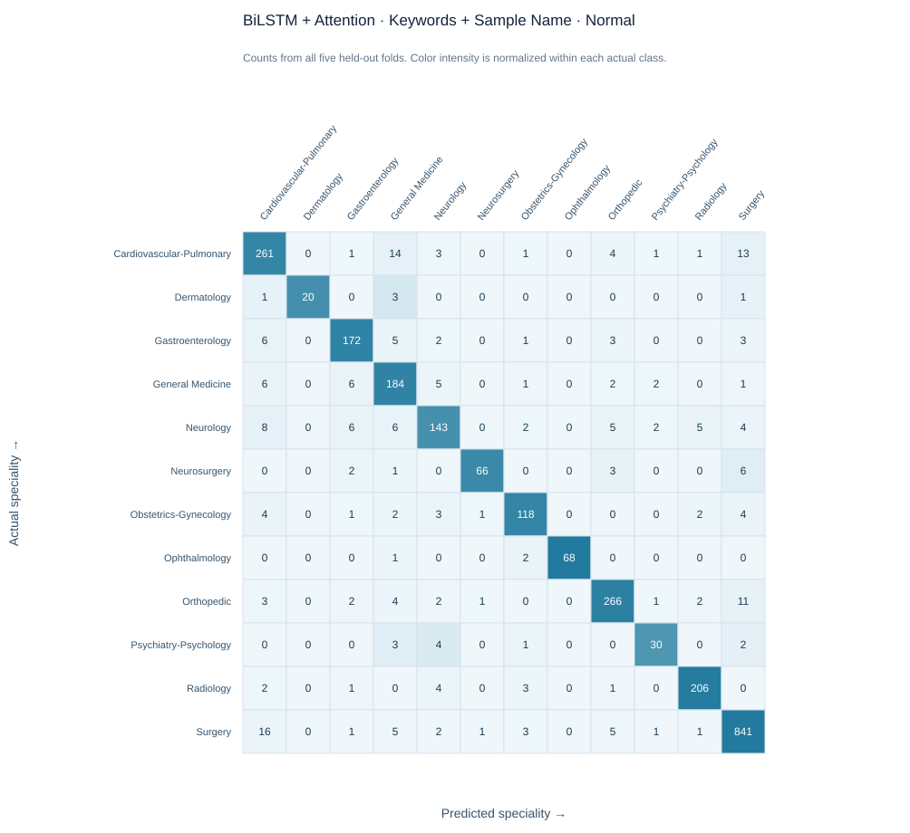
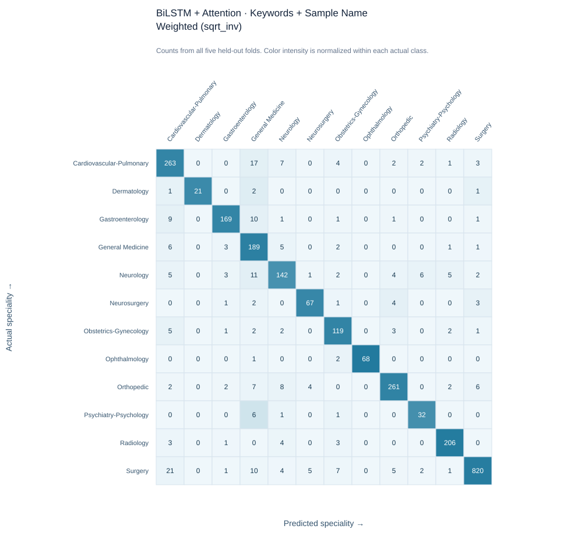

Clinical NLP · 5-Fold Cross-Validation
← Dashboard
Keywords + Sample Name · BiLSTM + Attention
2 completed five-fold experiment(s). Fold mean ± sample standard deviation; pooled OOF is computed over all labelled examples.
Aggregate performance
| Experiment | Accuracy fold mean ± SD | Macro-F1 fold mean ± SD | Weighted-F1 fold mean ± SD | Min class F1 fold mean ± SD | Macro-F1 pooled OOF | Pass folds | Avg. best epoch |
|---|---|---|---|---|---|---|---|
| Normal | 90.9% ± 1.2% | 0.888 ± 0.020 | 0.909 ± 0.012 | 0.743 ± 0.078 | 0.889 | 5/5 | 6.600 ± 2.074 |
| Weighted (sqrt_inv) | 90.2% ± 2.2% | 0.883 ± 0.029 | 0.904 ± 0.020 | 0.752 ± 0.071 | 0.882 | 5/5 | 10.800 ± 10.060 |
Per-class F1
Top line: fold mean ± SD. Second line: pooled out-of-fold F1.
| Medical specialty | Normal | Weighted (sqrt_inv) |
|---|---|---|
| Cardiovascular-Pulmonary | 0.862 ± 0.023 pooled: 0.861 | 0.857 ± 0.020 pooled: 0.857 |
| Dermatology | 0.878 ± 0.125 pooled: 0.889 | 0.906 ± 0.103 pooled: 0.913 |
| Gastroenterology | 0.896 ± 0.044 pooled: 0.896 | 0.906 ± 0.032 pooled: 0.906 |
| General Medicine | 0.847 ± 0.039 pooled: 0.846 | 0.823 ± 0.088 pooled: 0.815 |
| Neurology | 0.819 ± 0.059 pooled: 0.819 | 0.803 ± 0.074 pooled: 0.800 |
| Neurosurgery | 0.896 ± 0.052 pooled: 0.898 | 0.866 ± 0.069 pooled: 0.865 |
| Obstetrics-Gynecology | 0.887 ± 0.075 pooled: 0.884 | 0.860 ± 0.058 pooled: 0.859 |
| Ophthalmology | 0.978 ± 0.034 pooled: 0.978 | 0.978 ± 0.034 pooled: 0.978 |
| Orthopedic | 0.916 ± 0.026 pooled: 0.916 | 0.913 ± 0.025 pooled: 0.913 |
| Psychiatry-Psychology | 0.772 ± 0.097 pooled: 0.779 | 0.776 ± 0.109 pooled: 0.780 |
| Radiology | 0.950 ± 0.033 pooled: 0.949 | 0.948 ± 0.035 pooled: 0.947 |
| Surgery | 0.955 ± 0.006 pooled: 0.955 | 0.957 ± 0.004 pooled: 0.957 |
Confusion matrices
Each matrix uses pooled out-of-fold predictions; rows are actual classes and columns are predictions.
Normal

Weighted (sqrt_inv)
